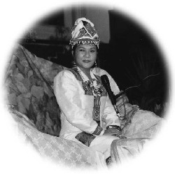
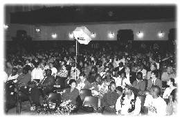

| La tournée de conférences de Maître au Moyen-Orient et en Afrique du Sud |
 Tandis que les Américains célébraient leur fête de Thanksgiving, les Sud-Africains accueillaient dans la joie le Maître Suprême Ching Hai et Ses amis pratiquants à Johannesburg, lieu de la première conférence de Maître en Afrique du Sud. Là-bas, c'était l'été, mais il faisait plus frais que d'habitude quand les amis pratiquants sont arrivés à Johannesburg et il faisait un temps merveilleux pour distribuer les prospectus de la conférence et coller les affiches dans les rues.
 La conférence a eu lieu dans la salle municipale de Johannesburg située au centre de la ville. L'édifice a été conçu pour ressembler davantage à un théâtre qu'à un espace pour réunion publique et, en fait, c'est là que l'orchestre symphonique de Johannesburg joue pendant la saison des concerts. Avant même le début de la conférence, beaucoup de gens d'ici s'étaient inscrits pour l'initiation.
Pour la conférence de Johannesburg, Maître portait une toilette blanche brodée de totems africains bleus, rouges et jaunes ainsi qu'une haute coiffe dans les mêmes couleurs, avec beaucoup de grâce, magnifiquement belle, se mariant parfaitement avec le décor de la pièce et en complète harmonie avec les coutumes africaines.
Avant la conférence, une soeur africaine accompagnée d'autres personnes de la région, ont chanté le chant zoulou " Shosholoza " (Aller de l'avant), symbolisant Maître nous conduisant dans notre pratique spirituelle d'un grand pas en avant.
Le rythme libre et l'accompagnement enthousiaste de cet air de danse ont été un heureux prélude à la conférence du soir. Maître a commencé son propos en disant que les Africains portaient des habits très colorés parce qu'ils sont heureux dans leur coeur et proches de Dieu. C'est parce que Dieu est plein de couleurs qu'il a créé beaucoup de choses colorées sur Terre, y compris la peau des différents peuples.
Maître a poursuivi en disant qu'il n'existe pas de souffrance éternelle mais seulement l'amour éternel. Nous lisons dans la Bible : " Frappez et l'on vous ouvrira ", mais nous ne savons pas où frapper. Aussi, la Méthode Guan Yin nous fournit une occasion de savoir comment " Demander et recevoir de Dieu " et où " Frapper pour ouvrir notre porte de sagesse ".
Beaucoup de gens d'ici de différentes races ont reçu l'initiation ce soir-là. La dernière personne à entrer dans la pièce de l'initiation a été un policier Zoulou dans son uniforme, un revolver à la hanche. Il venait juste d'être relevé de son travail pour pouvoir recevoir l'initiation. La première conférence de Maître en Afrique du Sud a été un succès retentissant et a donné le ton pour la suite de Sa tournée en Afrique du Sud.